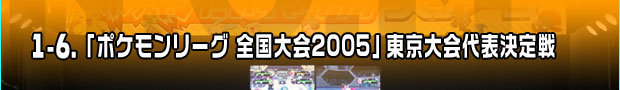
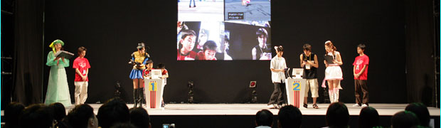
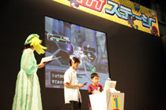
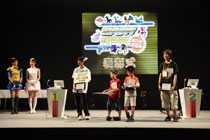
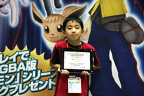
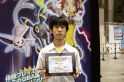

|

 |
17日(土曜日)のイベントステージでは、８月21日に横浜で行われる予定のポケモンリーグ全国大会決勝戦へのパスポートを賭け、小学生以下の部決勝戦・中学生以上の部決勝戦がそれぞれ行われました。そして双方の勝者が激突し、全国大会への出場者がついに決定。東京地区出場者総勢512名の頂点に立つことができたのは、果たして誰なのでしょうか？
|
|
| ● |
バトルは『ポケモンＸＤ 闇の旋風ダーク・ルギア』を使用 |
| ● |
６匹のエントリーポケモンから使用できるのは４匹 |
| ● |
制限時間は８分間、決着がつかなかった場合の延長戦は５分間 |
| ● |
コマンド入力には30秒の制限つき |
| ● |
使用できるポケモンは『ポケットモンスター ルビー・サファイア』『リーフグリーン・ファイアレッド』『ポケモンコロシアム』で入手可能なもののみ。レベルは50まで。 |
| ● |
改造コードなどを使ったものは不可 |
|
以上のルールに沿って、小学生以下の部と、中学生以上の部のバトルがステージ上で同時進行で開始されました。
決勝戦に残った４名は、真剣な表情でバトルに挑みます。緊張感漂う時間が流れ、着々と進むバトル。
小学生以下の部優勝は、藤野翔太君。そして少し後になって中学生以上の部の優勝者が決定、引き続き両者が激突し、東京地区代表者決定戦が開始されました。
再び緊迫したバトルが繰り広げられ、観客の見守るなかで優勝したのは、中学生以上の部優勝の藤田龍明君。
８月21日に横浜で行われる、全国大会への切符を見事手にしたのでした。
優勝と準優勝のふたりには、盾とリボン、賞品として『ポケモンＸＤ 闇の旋風ダーク・ルギア』のソフトが、そして惜しくもそれぞれの部で準優勝となったふたりにも盾が贈られ、地区大会決勝は幕を下ろしたのでした。


|

スターミーにプテラ、ジュカインなど、いろいろなカートリッジのポケモンを使いこなした藤野君。
強いポケモンの育て方をたずねたところ、ポケモンに「きょうせいギプス」を持たせているそう。
「きょうせいギプス」はポケモンのすばやさが下がる代わりに、のうりょくが上がりやすくなるすごいどうぐです。
「来年のポケモンリーグでは、ラティアスを育てていろんなわざを使いたい」と抱負を語ってくれました。
|

藤田君は戦術として、相手のポケモンによって、メタグロスとカビゴンとを使い分けていました。
それによって相手からの弱点を減らしたり、逆に相手の弱点を突いたりできるようになります。
相手のポケモンとの相性を考えることは、ポケモン対戦の基本中の基本。
また、わざとどうぐの組み合わせを駆使することもポイントだとのこと。参考になったかな？
|
|